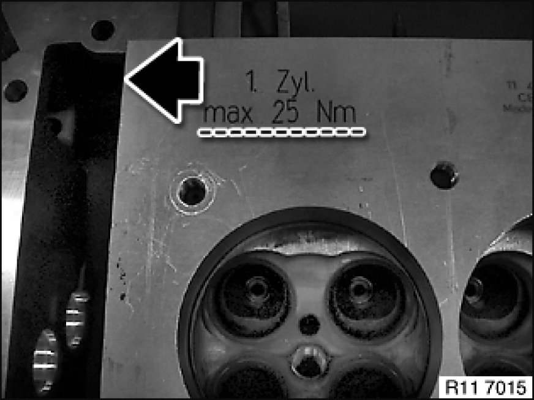
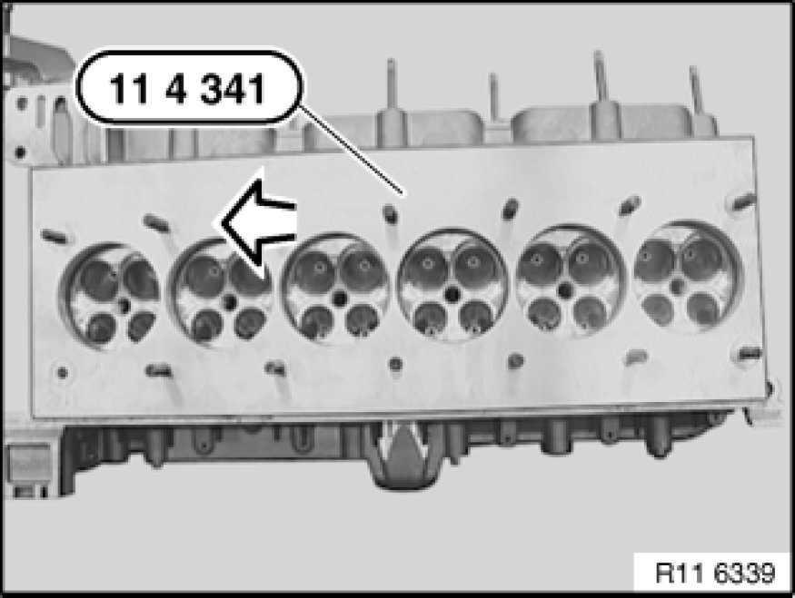
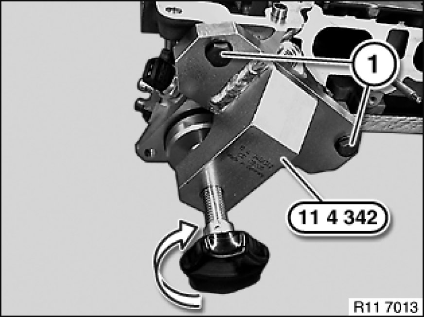
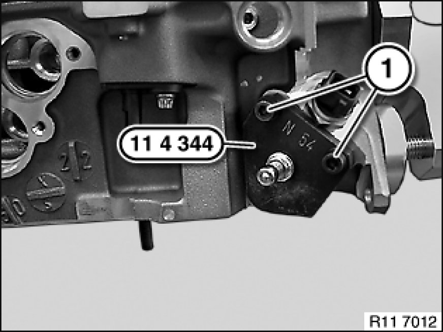

Cylinder Head Assembly: Testing and Inspection
11 12 729 - Checking cylinder head for water leaks (N52K)

Special tools required:
- 11 4 341
- 11 4 342
- 11 4 344
- 11 4 345

Important!
Pressure-test cylinder head to max. 3 bar.
Heat cylinder head to 60 °.
Check for bubble formation in a water bath.

Necessary preliminary tasks:
- Remove cylinder head Removal and Replacement
- Disassemble cylinder head Service and Repair

Note:
Observe mounting of special tool 11 4 341 on cylinder.
Secure special tool 11 4 341 with bolts 11 4 345 to 25 Nm.

Install special tool 11 4 341 with special tool 11 4 345.
Installation Note:
Cylinder no. 1 is marked.

Fit special tool 11 4 342 with bolts (1). Screw in knurled screw in direction of arrow.
Sealing flange must rest flat.

Secure special tool 11 4 344 with bolts (1).
Note:
Compressed air at valve max. 3 bar.
Heat cylinder head to 60°.
Check for bubble formation in a water bath.

Assemble engine.